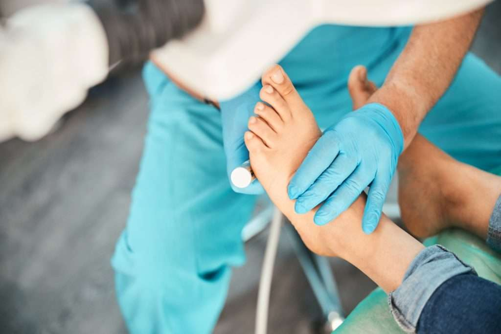
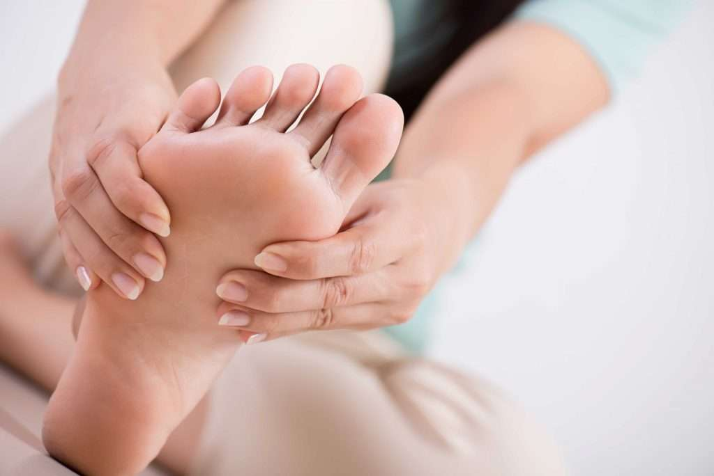
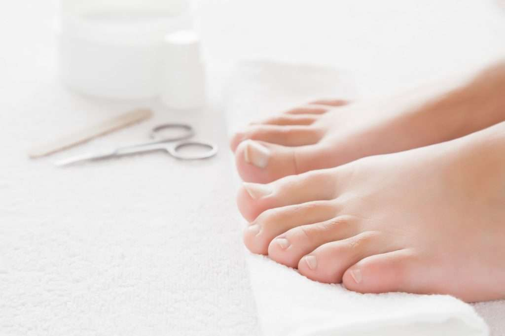
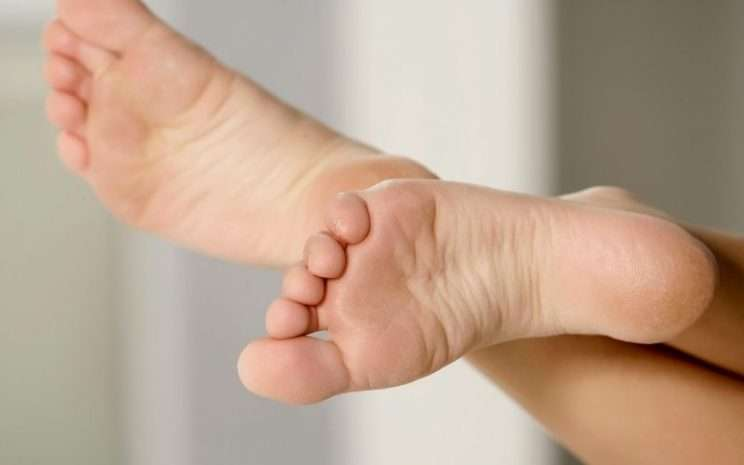
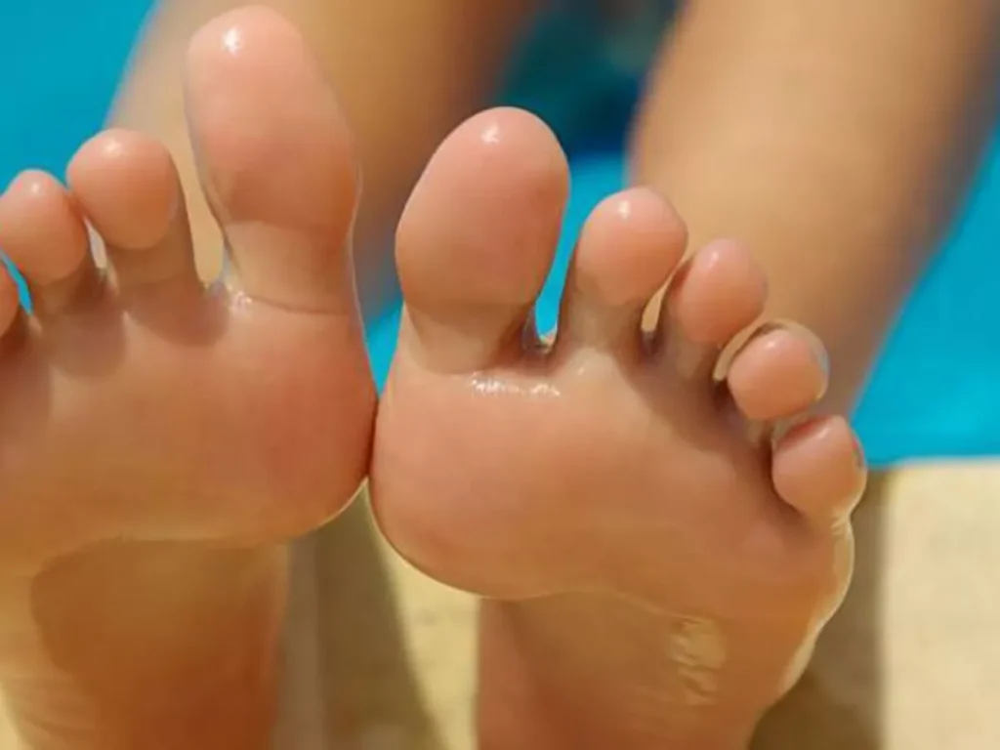

Tratamiento clínico para uñas encarnadas, hongos, callos y pie diabético — con desinfección y esterilización total por ozono. En San Francisco y Juan Díaz.

"Ya no siento la incomodidad ni dolor y me han dado de alta."
José L. · Cliente"Tengo unos 6 meses en tratamiento, mis uñas se ven bien."
Marisol H. · Cliente"Ahora gozo de una nueva y buena calidad de vida en mis pies."
Josefina Á. · ClienteAtención técnica y personalizada para la salud integral de uñas y piel — no es estética, es salud.

Onicocriptosis: corregimos el recorte, aliviamos el dolor y te acompañamos con seguimiento hasta el alta — sin cirugía traumática.
Ver tratamiento
Onicomicosis: tratamiento clínico para recuperar uñas sanas y restauradas por completo, con control hasta verlas como antes.
Ver tratamientoOnicogrifosis: rebaje y tratamiento de uñas gruesas para que vuelvas a usar tu calzado.
Eliminación de callosidades y durezas plantares para caminar cómodo otra vez.
Tratamiento de verrugas y lesiones plantares con técnica clínica y seguimiento.
Control del sudor excesivo y los hongos plantares que provoca, con tratamiento dirigido.
Cuidado podal especializado para personas con diabetes, con prevención y control.
Masajes de hidroterapia y masaje manual que relajan y reactivan la circulación.
Limpieza profunda y profesional de tus pies, manteniendo la salud de uñas y piel.
Cuéntanos tu caso y te orientamos.
EscríbenosLo que nos hace la elección número uno para cuidar tus pies en Panamá.
Cumplimos las 3 funciones de la técnica en quiropedia: limpieza, desinfección y esterilización del instrumental quirúrgico en cada procedimiento.
No improvisamos: diagnosticamos la causa, aplicamos el tratamiento adecuado y te acompañamos con controles hasta darte de alta.
Nos enfocamos en la salud integral de uñas y piel. Resultados reales, no soluciones temporales.
"Sufría mucho con mis uñas encarnadas, conocí Pies Saludables y me diagnosticaron que la causa era por mal recorte. Me realizaron el recorte adecuado el cual desde el principio me sentía cómodo, llevé mi seguimiento de control, después de nueve meses ya no siento la incomodidad ni dolor y me han dado de alta. Recomendados."
"Mis uñas no se veían bien, me había contagiado de hongos, no usaba sandalias por inhibición, tengo unos 6 meses en tratamiento, mis uñas se ven bien, sigo yendo a Pies Saludables porque me gusta aunque mis uñas están restauradas completamente. Ahora me cuido yendo a Pies Saludables donde asisto porque me agrada su profesionalismo y masajes que recibo en mis pies."
"Creía que lo mío no tenía solución, sentía escozor en mis pies y me salieron unas ampollitas que me picaban y me dolían. Me recomendaron la Clínica Pies Saludables, no pensé que me iba a sanar tan rápido, ya que tenía mucho tiempo con el problema. Ahora gozo de una nueva y buena calidad de vida en mis pies. No dejaré de ir a Pies Saludables para mi pedicura Clínico."


En Pies Saludables PTY ofrecemos tratamientos efectivos y personalizados para la salud y el bienestar de tus pies. Nuestro servicio es técnico-clínico: nos enfocamos en la salud integral de tus uñas y piel.
Por eso, en cada procedimiento mantenemos total desinfección, asepsia y esterilización del instrumental mediante sistemas de ozono.
Abierto todos los días, de 9:00 am a 7:00 pm.
Escríbenos por WhatsApp y agenda tu cita hoy. Atención el mismo día según disponibilidad.